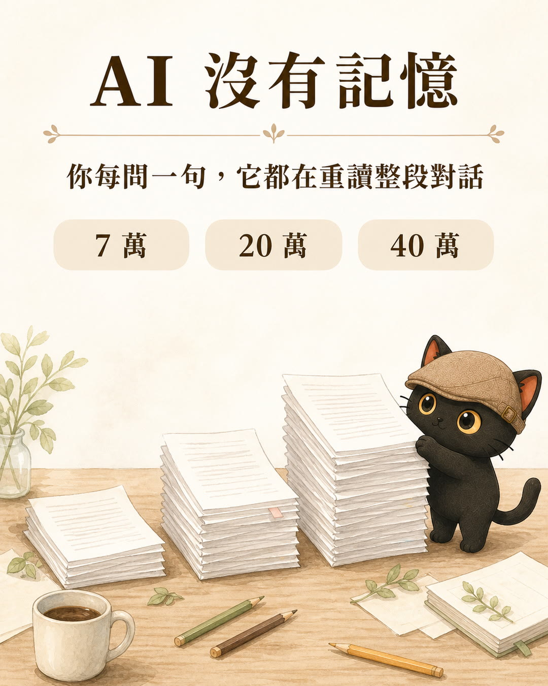
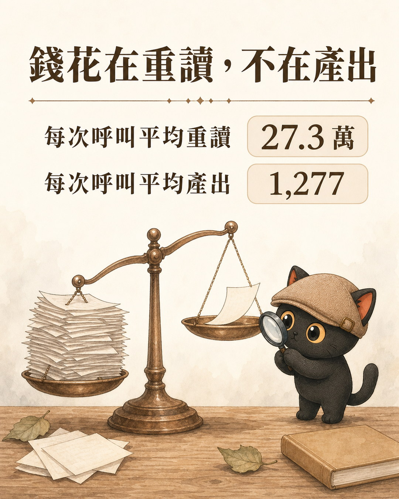
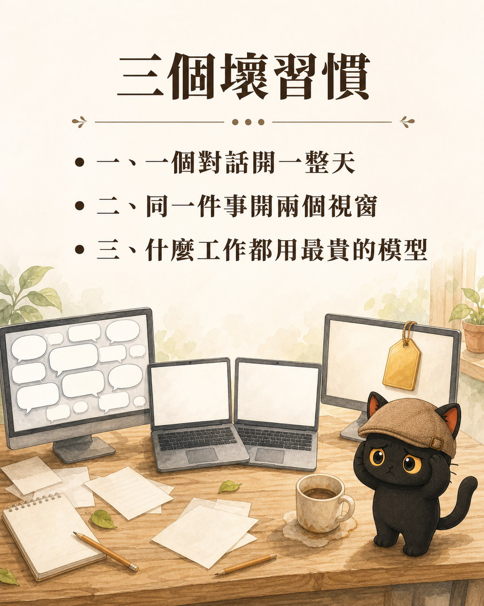
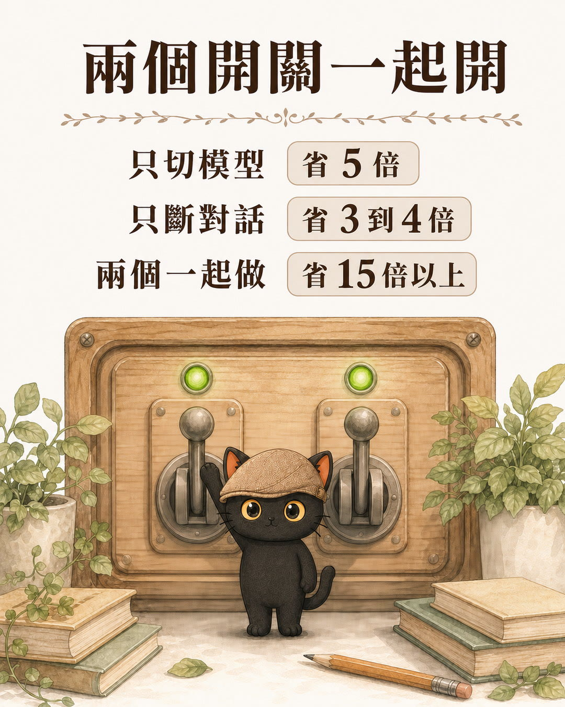

我沒有多接案子，沒有開發新產品，大部分時間就是整理知識庫、寫文章、備課。但我的 AI 額度用得越來越快。以前的方案用起來還算寬鬆，後來升到額度大二十倍的方案，感覺跟以前差不多，還是常常不夠用。
我的第一個猜測是：我的知識庫太臃腫了。一百多個技能包、三萬字的規則主檔、一堆自動化腳本，每次開對話都要載入這一整套。是不是光「開機」就把錢燒掉了？
我請 AI 掃了我電腦上的實際紀錄，把這個猜測驗證一遍。結論是：我猜對了四分之一，錯了四分之三。
- 用 AI 工具（Claude Code、Cursor、ChatGPT Projects 之類）做事，覺得額度越來越不夠用的人
- 幫自己建了一整套規則、技能包、知識庫，開始懷疑是不是養太大的人
- 想知道自己的 AI 到底把錢花在哪，而不是只看到一個總額數字的人
- 一個大部分人不知道的計費機制：AI 每問一句，都在重讀整段對話
- 三個具體的壞習慣，跟每一個對應的改法
- 一支可以直接跑的腳本，量自己的實際用量
先搞懂一件事：AI 每問一句，都在重讀整段對話
這是最需要先講清楚的機制，因為它違反直覺。
你跟 AI 對話的時候，感覺像在聊天：你講一句，它回一句，它記得前面講過什麼。但實際上 AI 沒有記憶。每問一句話，系統都會把「這個對話從頭到現在的全部內容」重新送給它看一次。
所以在同一個對話裡：
| 你講到第幾句 | 系統送給 AI 看的量 |
|---|---|
| 第 1 句 | 7 萬 |
| 第 100 句 | 20 萬 |
| 第 800 句 | 40 萬 |
你在第 800 句只打了二十個字，帳單上算的是四十萬。

你付的錢，跟你做了多少事沒什麼關係，跟你在同一個視窗待了多久關係很大。
這件事沒有人會主動告訴你，因為介面上完全看不出來。畫面上就是一個對話框，你打字，它回話，沒有任何東西顯示「你現在每問一句要花多少」。
我掃了自己一個月：19,287 次呼叫
那些對話紀錄存在本機，一個月份共 166 個對話檔，加起來 255MB。掃出來的數字：
| 項目 | 實測 |
|---|---|
| 一個月的 API 呼叫次數 | 19,287 次 |
| 每次呼叫平均要重讀的內容 | 27.3 萬 token |
| 重讀量超過 20 萬的呼叫佔比 | 60.5% |
| 重讀量超過 40 萬的呼叫佔比 | 22.1% |
| 前 10 個對話吃掉的額度 | 48.5% |
| 我實際產出的字（output） | 每次呼叫平均只有 1,277 token |
最後一行是重點。我的錢絕大部分花在「重讀」，不在「產出」。

再看最貴的幾個對話：
| 對話 | 我發言次數 | 結束時的重讀量 |
|---|---|---|
| A | 31 次 | 55.9 萬 |
| B | 110 次 | 15.3 萬 |
| C | 99 次 | 76.1 萬 |
| D | 24 次 | 67.0 萬 |
| E | 36 次 | 88.8 萬 |
看 A 跟 D：我只講了三十一次跟二十四次話。過程中 AI 讀了大量檔案，之後每一輪都在重讀那些早就用不到的東西。
看 B 跟 C：兩個對話同一分鐘開的，第一句話一模一樣。那是我在同一件事上開了兩個視窗，同一件事付了兩次錢。兩個加起來佔我整個月的 12.4%。
三個壞習慣
數字攤開之後，我的問題就很清楚了。

壞習慣一：一個對話開到天荒地老
我習慣一個任務從頭做到尾都在同一個對話裡。前面查了什麼、讀了什麼檔案，全部堆著。堆到後面，每問一句都在付一次全額。
而且這不只是錢的問題。四十萬字的對話裡有一大半是早就用不到的舊內容，AI 要在裡面找重點，判斷力反而下降。貴，而且變笨。
壞習慣二：同一件事開兩個視窗
有時候我覺得對話卡住了，就另開一個重問。舊的沒關，新的又從頭載入一次。做同一件事，付兩份錢。
壞習慣三：什麼工作都用最貴的模型
我掃出來的模型分布：
| 模型 | 佔我一個月的用量 |
|---|---|
| 最高階模型 | 86.1% |
| 中階模型 | 1.7% |
| 其他 | 12.2% |
整理檔案、批次改名、盤點清單這種完全機械的工作，我也在用最高階的模型跑。以價格來說，高階模型大約是中階的五倍。
- 模型不是越聰明越好：我開始學著算 AI 的 CP 值 這段只講了我用錯模型，那篇講的是怎麼算「什麼工作值得用貴的」，含迭代次數的算法
我原本以為的原因，只佔四分之一
回到我一開始的猜測：知識庫太肥。
實測結果是，我每開一個新對話，還沒說任何話，系統已經載入 7.3 萬 token（中位數，最大的一個到 12.2 萬）。組成大概是規則主檔、技能包描述清單、掛上去的各種外部連接器、系統提示與工具定義。
這筆固定開銷每次呼叫都要帶著跑。19,287 次乘上 7.3 萬，大約十四億，佔我總量的 26%。
所以知識庫確實有貢獻，但它佔四分之一。另外四分之三是對話累積出來的。我如果把規則主檔砍一半，只能省下大約 8%，而且會犧牲 AI 對我工作方式的理解。
順帶一提，我還掃出一件蠢事：我掛了一堆從來沒用過的外部連接器。實際三十天的呼叫紀錄顯示，設計工具、簡報工具、信箱、手機模擬器這幾個，一次都沒被呼叫過，其中一個畫圖工具還被重複掛了兩份。這些每次開對話都在載入。關掉它們大概能讓開場從 7.3 萬降到 5.5 萬到 6 萬之間。
解法：兩個開關
問題定位完，解法就簡單了。兩個開關，一個管單價，一個管數量。
開關一：模型切換點
不需要判斷力的工作切便宜模型，需要判斷的切回高階。
哪些可以切便宜：讀檔盤點、搜尋比對、批次改名、格式轉換、寫檔開卡。共同特徵是輸出格式明確、低風險可逆、錯了機器驗得出來。
哪些絕對不能切：語氣文案、對外內容、策略判斷、規則變更、破壞性批次操作、驗收複查。
開關二：對話斷點
一個階段做完，把對話斷掉，重新開一個。
判斷斷點，看有沒有做出一個可以驗收的東西。時間長短不算。規劃完是一個斷點，執行完是一個斷點，驗收完是一個斷點。斷之前寫一份交接文（進度、下一步、涉及檔案、注意事項），新對話第一句貼交接文路徑。
我算過這兩種做法的差別：
| 做法 | 省下 |
|---|---|
| 只切模型 | 約 5 倍單價 |
| 只斷對話 | 約 3 到 4 倍的量 |
| 兩個一起做 | 15 倍以上 |
只做一個都不夠。切了模型但對話還是開一整天，便宜模型也會被四十萬的重讀量拖垮。

還有一個開關：把讀檔外包出去
這是我原本就有、但用得不夠的做法。
派一個「子代理」去讀檔案，它讀完五十個檔案，只回報一頁摘要給主對話。那五十個檔案的內容不會留在主對話裡，之後每一輪都不用重讀。
我的實測數字證明這招有效：子代理只佔我一個月用量的 4.2%，卻做掉了不少盤點工作。它省的是後續每一輪重讀的成本，模型單價本身沒變。
為什麼我沒有寫成自動化規則
我第一個念頭是：那就寫一條規則，讓 AI 自己切模型不就好了。
我實際去查了，這條路走不通，原因有三層：
第一，AI 技術上切不了。主對話用哪個模型，是這個對話啟動時就決定的，AI 自己改不了。這是機制上的限制，改設計也解決不了。
第二，攔截器（hook）不知道你在做什麼。攔截器可以在每次你送出訊息時注入一段提醒文字，但它不知道你現在跑到第幾步。它只能一直喊「記得切模型」，喊久了就變成背景噪音，而且那段提醒本身每一輪都要付錢。我算過，一段 280 字元的提醒，一個月大約五百萬 token。
第三，我原本就有規則，但沒被執行。這是最刺的一點。我去讀我自己的健檢技能包，發現裡面早就寫了：
- 「主控模型用什麼都可以，包含中階模型」
- 「健檢是唯讀的，整改另開任務執行」
- 「整場新增量控制在五萬 token 以內」
三條規則從兩個月前就寫在那裡。實際跑出來呢？整場用最高階模型、整改接在同一個對話做完、最貴那場一千零五十六次呼叫。
規則早就有了，缺的是三樣東西：什麼時候切、在哪裡斷、跑完怎麼驗。
- 直接抄別人的 Skills、工作流，其實沒什麼用 那篇講的是為什麼抄來的流程在你身上跑不動，跟我這次踩到的是同一個坑：文字寫下來了，但沒有東西讓它真的發生
定案：我改了什麼
我把改動放在技能包裡，不放在攔截器，也不放在通用規則主檔。理由是技能包本身就是流程，流程的每一步就是掛載點，提醒可以放在對的位置，不會變成噪音。
四處改動：
這一段只列清單。要不要改、怎麼改，等我看完報告再決定。
整改做完不用再清一次對話，下個月從第 1 步重來。
一、主控模型明訂預設值。從「用什麼都可以」改成「預設中階模型，只有分析那一步切高階」。
二、新增四個切換提示節點。AI 在這四個位置必須輸出固定格式的一行提示，缺一不得往下走：
| 節點 | 提示 |
|---|---|
| 盤點完、要進分析前 | 切高階：接下來是分析，不降級 |
| 分析完、要寫報告前 | 可切回中階：接下來只是寫檔開卡 |
| 報告存檔、開完卡後 | 健檢結束，建議清空對話：整改是另案 |
| 整改完、要複驗前 | 切高階：複驗要判斷 |
用固定的符號開頭，我在對話裡掃一眼就看得到。AI 提示，我手動切。這個分工是刻意的，因為切換時機常常要看當下狀況，機器判斷不了。
三、把「另開任務」講明成「另開對話」。原本的規則寫「整改另開任務執行」，這句話太模糊，實際執行時就變成同一個對話接著做。改成明確的動作：報告寫完就清空對話，整改在新對話裡從頭起算。
四、加上成本驗收。這是最重要的一條。原本那三條省錢規則之所以沒被執行，是因為沒有任何方法檢查它有沒有被執行。
我寫了一支唯讀的量測腳本，健檢報告新增一欄記錄四個數字：這一場的 API 呼叫次數、結束時的重讀量、子代理佔比、模型分布。異常門檻設在「呼叫超過三百次」或「結束時重讀量超過二十萬」，超過就要在報告裡寫明卡在哪一步。
設完門檻我才發現，我最貴那場健檢的結束重讀量是 55.9 萬，另外還有幾場到 88.8 萬。門檻沒設錯，是實際狀況比我想像的糟。
你可以怎麼照做
不用有我這套知識庫，這幾件事任何人都適用。
第一步，一件事做完就開新對話。這是最大的單一槓桿，什麼設定都不用改。判斷時機：一個任務收尾了，或話題轉到不相關的事，就清。代價是要重新交代脈絡，但寫一份交接文大概三千到五千 token，比拖著四十萬跑二十輪便宜得多。
第二步，開場先決定這場用哪個模型。
| 這場要做的事 | 開場先切 |
|---|---|
| 整理檔案、盤點、搬移、格式轉換 | 中階模型 |
| 寫作、策略、改規則、對外內容 | 高階模型 |
| 不確定 | 高階，需要時再說 |
切模型不會清空對話，前面講的都還在。所以「便宜模型跑完切回高階驗收」可以在同一個對話裡完成。
第三步，關掉沒在用的外部連接器。去設定裡看一遍，三十天沒用過的就關。要用時再開，大概三十秒的事。
第四步，讓 AI 派子代理去讀檔。需要大量翻檔案的時候，明講「派一個子代理去讀，只回報摘要」。讀過的內容不會留在主對話裡。
第五步，也是最容易被跳過的一步：量給自己看。沒有量測，前面四步做了也不知道有沒有效。
量給自己看
我把量測腳本整理成可以直接跑的版本。它只讀本機的對話紀錄，不寫任何檔案、不上傳任何東西。
import json, os, glob, collections
BASE = os.path.expanduser("~/.claude/projects")
mon = collections.defaultdict(collections.Counter)
for fp in glob.glob(os.path.join(BASE, "**", "*.jsonl"), recursive=True):
with open(fp, errors="ignore") as f:
for line in f:
if '"usage"' not in line:
continue
try:
d = json.loads(line)
except Exception:
continue
u = (d.get("message") or {}).get("usage") or {}
ts = d.get("timestamp", "")
if not u or not ts:
continue
c = mon[ts[:7]] # 按月份分組
c["calls"] += 1
c["in"] += u.get("input_tokens", 0)
c["cc"] += u.get("cache_creation_input_tokens", 0)
c["cr"] += u.get("cache_read_input_tokens", 0)
c["out"] += u.get("output_tokens", 0)
print(f"{'月份':<9}{'呼叫次數':>10}{'平均每次重讀':>14}{'加權等效':>12}")
for m in sorted(mon):
c = mon[m]
reread = (c["cr"] + c["cc"]) / c["calls"] if c["calls"] else 0
# 加權：cache 讀 0.1 倍、cache 寫 1.25 倍、output 5 倍，折成 input 等效
w = (c["in"] + c["cc"] * 1.25 + c["cr"] * 0.1 + c["out"] * 5) / 1e6
print(f"{m:<9}{c['calls']:>10,}{reread:>14,.0f}{w:>11,.1f}M")
存成 usage.py，在終端機跑 python3 usage.py。
怎麼看結果：
- 平均每次重讀超過 20 萬，代表你的對話開太久了
- 呼叫次數除以你實際做的事，如果比例高得離譜，代表你在同一件事上來回太多輪
如果你不是用 Claude Code：這支腳本讀的是 Claude Code 存在本機的紀錄。你如果主要用 ChatGPT、Gemini 的網頁版，那些工具不會把逐次用量存在你的電腦上，這支跑不了。改用這三個替代做法：
- 看官方的用量頁：ChatGPT 與 Gemini 都有訂閱或 API 用量的頁面，至少能看到總量趨勢。看不到「每次重讀多少」，但總量往上跳的月份可以回想那個月在做什麼。
- 用對話長度當代理指標：一個對話裡你來回超過三十次，大概就到了該開新對話的點。不用精算，養成習慣比算得準重要。
- 如果你用 API：回應裡本來就有
usage欄位，把cache_read_input_tokens跟input_tokens記下來，算法跟上面那支腳本一樣。
這個路徑對照的是 Claude Code 的紀錄位置。你如果用別的工具，位置不同，但概念一樣：找到它存對話紀錄的地方，算「平均每次重讀多少」。
最後
我原本以為問題是「我的知識庫養太大了」，想砍規則、砍技能包。
實測告訴我，那條路只能省 8%，而且會犧牲掉 AI 對我工作方式的理解，得不償失。真正的問題在我怎麼用它：一個對話開一整天、什麼工作都用最貴的模型、規則寫了但沒有檢查機制。
規則寫了不等於規則有在執行。這件事我付了兩個月的帳單才學會。中間差的是三樣東西：明確的觸發位置、明確的動作、以及一個能檢查它有沒有發生的方法。
三樣缺一樣，規則就只是一段好看的文字。